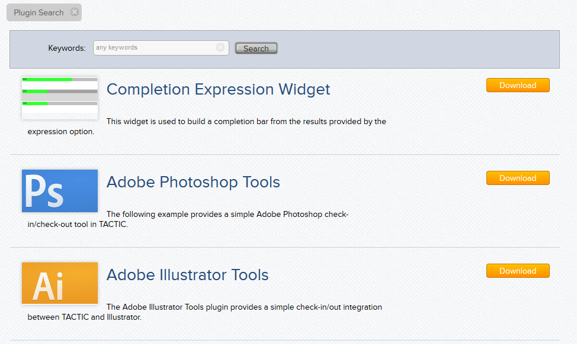

Download Plugins
What is a TACTIC Plugin?
A TACTIC plugin is a bundle of files that can be installed to enhance TACTIC’s core functionality. Virtually any TACTIC functionality can be encapsulated in a plugin. A TACTIC plugin is composed of a number of possible elements:
- manifest.xml: a file describing the contents in the database that belong to the plugin and also some metadata about the plugin
- media files (images)
- html, javascript, css files
Plugins Community Site

The Community Site is a central resource to search for plugins. You can find existing plugins to download and use from the plugins section. You can download the .zip file from the information section found to the right of each plugin page. You can also find older versions or previous releases from the downloads tab of each plugin page.
There are many other things you can do at the plugins community site. Before you download a plugin, you can go and check the ratings of the plugin to find out how other users have liked it. You can find documentation to get information about the plugin or help in installing the plugin. After you’ve used the plugin, you can also go rate the plugin. It might also be helpful if you write a review for the plugin. This can give other users feedback to know how useful the plugin is.
Plugins don’t have to be manually downloaded by you to install them. TACTIC has built-in functionality that automatically downloads and installs plugins if you have provided the url to the plugin .zip file. For more info on this and how to install the plugin using this method, look at the next "Install and Activate" section.
Install and Activate

Plugin Manager
The Plugin Manager is the primary tool for loading, unloading, deleting and creating plugins.
To open the Plugin Manager, go to:
sidebar → Admin views → Project → Plugins
How to Install a Plugin
Plugins are installed through the Plugin Manager. When a plugin is installed, the plugin’s .zip file is placed in the <TACTIC_DATA_DIR>/dist and the contents are extracted to the <TACTIC_DATA_DIR>/plugin directory.
There are two ways to install a plugin, one way is through the URL. This involves copying the link address of the .zip file from the plugin page. You can then paste the URL back in tactic and press Install.

The other way to install a plugin is to browse for the .zip file. Once the Plugin Manager is open, do the following:
- click on the green plus "+" button to open the panel
- click on the Browse and select the .zip file you have downloaded.

How to Activate a Plugin
Plugins are activated through the Plugin Manager.
Once the plugin is installed (see section above on installing a plugin) the plugin will appear in the Plugin List.
In order to use a plugin in a particular project, it must be activated. "Activation" of a plugin will register the plugin and import any configuration as specified in the .spt file. Since each project has its own set of independent plugins, it is possible that different plugins versions are active on different projects. However, only one version of a plugin may be active at a time on any given project. This allows you to have several different plugins installed in Tactic but you select which ones you want to have active in the project you are working on.
To activate a plugin, in the Plugin Manager, select the plugin from the Plugin List. The panel on the right will open.
In the new panel, select Info from the list of tabs and click on the Activate button.
Multiple versions of the same plugin
A TACTIC installation can have multiple different versions of the same plugin installed, but only one version of the plugin can be active on a single project. For the most part, different projects can have different plugins active without interference. Because of the flexibility of TACTIC and TACTIC’s plugins, it is entirely possible to break this, so care must be taken to write self-contained plugins that will not interfere with others.
Updating a plugin
Plugins can be updated simply by deactivating an older version and activating a new version of the plugin. Most plugins should have no trouble with this, however, it is possible that any given plugin requires special instructions. Refer to the documentation of the individual plugin for more details if any exist.

There is a difference between removing a plugin and deleting a plugin. Once you have a plugin in your TACTIC directory, that means you have installed the plugin and it means that you can see it in the plugin list of the plugin manager view. If you have a plugin activated, it means the plugin is being used in the current project you have open. To remove a plugin means to deactivate the plugin from the current project. You can only remove a plugin if it is activated. You can remove a plugin by pressing the "Remove" button as it is shown in the screenshot above. Removing a plugin does not remove the plugin from TACTIC.

On the other hand, deleting a plugin deletes it from TACTIC and so it is gone from every single project it was being used in. Deleting a plugin is risky because another project using the plugin might not work without it. It is safe practice to delete a plugin after making sure no other project uses it. You can delete a plugin by first going to the plugin manager. You can then right click on the plugin you want to delete from the plugin list and select "Delete Plugin". You can see this in the screenshot above.